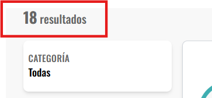

GUIA PARA USUARIOS DE CALITRABAJA
Introducción
Tu cuenta en CaliTrabaja es tu puerta de entrada para conectar con los mejores expertos y encontrar los servicios que necesitas de forma rápida y segura. Este manual te guiará paso a paso para que saques el máximo provecho de la plataforma y los pasos son simples: crea tu cuenta, inicia sesión y comienza a descubrir todo lo que CaliTrabaja tiene para ofrecerte.
Cómo crear una cuenta en CaliTrabaja
1. Dirígete a la Página de inicio de CaliTrabaja y haz clic en [Registrarse] en la esquina superior derecha.
2. Ingresa tu primer nombre y primer apellido, correo electronico y una contraseña segura con al menos 6 caracteres y una letra mayúscula. Una vez todos los campos llenados, dar click en [Registrate].
3. Una vez tu cuenta este verificada, ya tendras acceso a todo lo que CaliTrabaja tiene para ofrecerte.
Inicio de sesión
1. En caso de que ya tengas una cuenta, dirigete a la opción [¿Ya tienes una cuenta?] que se encuentra dentro del apartado de registro.
2. Ingresa tu correo electrónico y contraseña para acceder a la plataforma.
3. Una vez tu cuenta sea verificada, ya tendras acceso a todo lo que CaliTrabaja tiene para ofrecerte.
Recuperar contraseña
1. En caso tal de que hayas olvidado tu contraseña, dirigete a la opción [¿Olvidaste tu contraseña?] que se encuentra dentro del apartado de inicio de sesión.

2. Ingresa tu correo electrónico y al dar click en enviar, te llegara un enlace al correo electronico el cual te permitira restablecer la contraseña olvidada.

Perfil cliente
1. En el menú, Dirigete a la opción [Perfil].
2. Se podrá visualizar toda la información correspondiente y tú puedes gestionar toda tu información
3. Podras modificar tus datos básicos (nombres y apellidos) accediendo al icono en la esquina superior derecha.
4. Podras modificar tu ubicación accediendo a la opción [+Añadir barrio]. superior derecha
5. Se visualizara un panel central donde aparecen las opiniones que los usuarios han dejado a los expertos. Cada valoración muestra el nombre del experto, la calificación recibida y un comentario.
Uso de la interfaz de publicaciones
1. Ingresa a [publicaciones] en el menú principal.
2. A continuación, verás la interfaz de publicaciones de CaliTrabaja, donde podrás encontrar expertos de forma sencilla y rápida.
3. En el lado derecho, verás todas las publicaciones que hay activas en el momento.
4. En el lado izquierdo, verás el sistema de busqueda y filtros el cual permite ordenar y seleccionar a los expertos según tu necesidades, ya sea por precio, categoría o fecha de publicación.

5. Por último, en la esquina superior izquierda (justo arriba del sistema de busqueda y filtros), encontraremos el conteo de cuantas publicaciones hay activas en el momento.
¿Como contacto a un experto?
1. Una vez que hayamos identificado el servicio que necesitamos, podremos contactar al experto desde el boton [Contactar experto]. Con esto podrás organizar precios y todo lo relacionado con la prestación del servicio.
2. Esto te dirige a la interfaz de mensajeria.
3. En la parte izquierda, encontrarás a todos los expertos que has contactado.
4. En la parte derecha, encontrarás el chat del experto seleccionado.
5. Desde aqui podrás empezar a chatear con el experto a gusto y solicitar un servicio de manera rápida y fácil.
Gestión de favoritos
1. ¿Te gusto mucho una publicación y quisieras encontrarla facilmente? pues puedes hacerlo
guardandola como favorita.
Dirigete a la publicación de tu interes y accede a los 3 puntos en la esquina superior izquierda.
2. Selecciona la opción guardar. Esto guardara tu publicación en el apartado de favoritos.
3. En la esquina superior derecha del menú encontrarás el icono correspondiente al apartado de favoritos. Haz clic en él.
4. Aqui visualizaras el apartado de favoritos, donde podrás gestionar (eliminar, agregar) tantas publicaciones favoritas como desees.
Configuración de cuenta
1. Ingresa a [Configuración] en el menú principal.
2. En esta sección podrás manejar tu información básica y hacer cambios importantes en tu perfil. En la parte superior se muestra el nombre de usuario (con un enlace directo a su perfil), La fecha en que se unió a la plataforma, El rol que tiene asignado.
3. Abajo de la información básica del perfil, se encontrarán dos opciones principales:
Cambiar contraseña: con un botón que permite actualizarla de manera rápida.

Eliminar cuenta: opción que desactiva el perfil de forma definitiva.
¿Como me convierto a experto?
1. Ingresa a [Convertirse en Experto] en el menú principal.

2. Se desplegará una ventana para confirmar si deseas continuar con esta acción. Haz click en [Aceptar].
3. Serás redirigido a tu perfil pero con algunos campos adicionales, lo que significa de que ya cuentas con el rol experto.
Perfil experto
1. Despues de convertirte a experto,en el perfil se podrá visualizar toda la información correspondiente y tú puedes gestionar toda tu información.
2. Podrás modificar tus datos básicos (nombres y apellidos) accediendo al icono en la esquina superior derecha.
3. Haz click en la opción [+Añadir descripción], donde podrás añadir alguna descripción para que los clientes sepan más sobre ti.
4. Haz click en la opción [+Añadir barrio], donde podrás añadir tu ubicación de residencia.
5. Haz click en la opción [+Añadir experiencia], donde podrás añadir experiencias laborales que hayas tenido (cargo, empresa, fecha de inicio y fecha de salida).
6. Haz click en la opción [+Añadir estudios], donde podrás añadir tus estudios realizados (Título, institución, fecha de inicio y fecha de salida).
7. En la parte de la derecha tendrás la opción de añadir todos los idiomas que sepas.
8. Y por último también podras añadir tus aptitudes, todo esto con el fin de generar confianza con el cliente y que sepan mas de ti.
Gestión de publicaciones
1. En el apartado del perfil, parte superior, habrá un pequeño menu donde podrás acceder a la opción de [Mis publicaciones].
2. Visualizaras la interfaz de mis publicaciones, donde podrás gestionar todas tus publicaciones.
Vamos a crear una haciendo click en [+Nueva publicación].
3. Se desplegará un formulario con los campos: Título de la publicación, precio, categoría, subcategoría y descripción. Una vez completado, haz click en [guardar].
4. Tu publicación ha sido creada correctamente. Recuerda que puedes editarla, eliminarla e incluso promocionarla.
Como promocionar una publicación
En CaliTrabaja, puedes promocionar publicaciones para que estas tenga una mayor visibilidad y que
los clientes puedan encontrarte mas fácilmente!
1. Dirigete a una publicación que ya tengas creada y selecciona los tres puntos. Se desplegara un
menú y seleccionaras la opción de [Promocionar].
2. Se despliega una ventana de confirmación. Haz click en [Obtener promoción].
3. Serás redirigido a la pasarela de pago para que realizes todo el proceso de pago.
4. Una vez completado el pago, tu publicación aparecera como promocionada y asi sera más accesible a los clientes.
¿Como realizo un reporte?
Cualquier usuario podrá reportar una publicación o usuario que le parezca inadecuado o que haya
tenido una mala experiencia:
1. Dirigete a la publicación que quieres reportar y haz click en los 3 puntos. Luego selecciona la
opción [reportar].

2. Selecciona un motivo y añade una descripción del problema. Luego haz click en [Guardar].
3. El reporte se guardara correctamente y un administrador tomará las medidas necesarias.